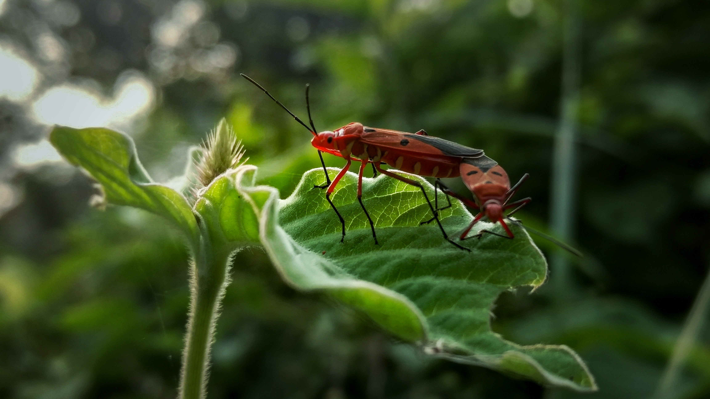
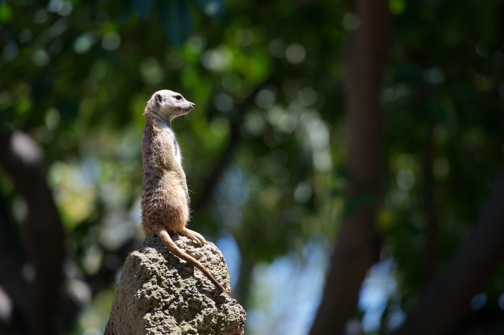

❮
❯
Manfaat menanam pohon juga penting untuk menjaga kelestarian hidup hewan dan tumbuhan. Berkat pohon, ketersediaan sumber makanan bagi hewan dapat terus berlangsung dengan baik. Mulai dari buah-buahan segar hingga berbagai sayuran yang juga bisa dikonsumsi oleh manusia, untuk memenuhi kebutuhan nutrisi dan vitamin.
Faktor utama dari mengenal dan melestarikan flora dan fauna adalah Menjaga alamnya, agar ekosistem nya tetap terjaga demi keberlangsungan hidup di bumi ini. Hutan menjadi sumber makanan dan obat-obatan pada saat ini dan masa mendatang juga sebagai Menghasilkan oksigen dan menyerap karbon dioksida sehingga suhu bumi terjaga
Kelestarian hewan dan tumbuhan penting untuk dijaga agar sumber daya yang dihasilkan dapat terus memenuhi kebutuhan hidup manusia. Hewan sebagai sumber pangan bagi manusia, begitu juga dengan tumbuhan yang penting untuk menjaga iklim, pangan, penyedia udara bersih, dan mencegah bencana alam.